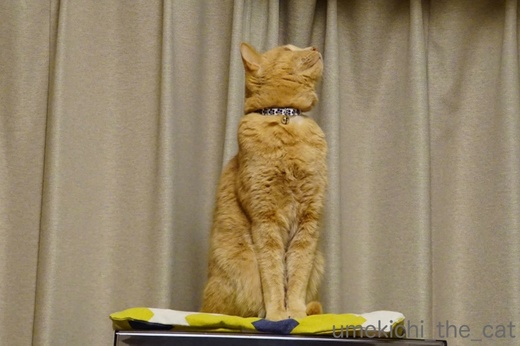
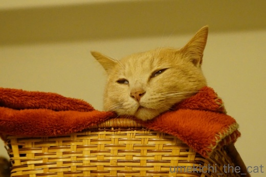

オリンピック観戦ー梅吉の場合ー [梅吉]





わし、ねむいわ・・・・・
連日のオリンピック観戦。
フィギュアのくるくる回る動きとカーリングのストーンが滑って行くのを
時々じーっとみている梅吉さん。
もっとも長続きはしませんが。
競技によっては終了時刻が夜中１２時近くになるものも。
フィギュアスケートは朝から滑らなきゃならないし。
放映権を高額で買ったテレビ局の発言権でそうなっちゃうそうですが
そんな時間に合わせてピークを作る選手は大変だろうな、と思います。
東京オリンピックもそんな事情で競技時間が決められるのかな。
アスリーツ・ファーストは難しいのでしょうか・・・
おすそわけのクッキー。
マグカップのフチに引っかかるようになっていました＾＾

カフェオレ色の梅吉

梅吉 2023年8月10日 永眠


梅吉と出会った譲渡会

犬猫の理由なき殺処分ゼロ
妄想広告
UMEKICHI 光

爆発的に早い！
時々攻撃的！
Thanks to Mr.Boss365
爆発的に早い！
時々攻撃的！
Thanks to Mr.Boss365

梅吉さんの「付き合いきれんわ～」というお顔がいいですね(^▽^;)
こてつが怒るのでふだんあまりテレビの前に長くいることはないのですが、この2週間だけは特別です^^
選手のすばらしい活躍には毎日ワクワクしていますが、深夜にマイナス20度の中ジャンプさせたり、選手の大半が転倒するような強風で競技を強行したり、誰のためにやってんの？？と思ってしまいます。
最高のコンディションで競える環境に近づけてほしいですよね。
by ゆきち (2018-02-20 17:49)
自分に注目が集まっていないの、敏感ですよね。
うちはわざと別の部屋に行って「うぉー！」とか「あ゛ーっ」とか
言い出します(><)
クッキーかわいい〜！
コーヒーに浮かべる猫様マシュマロを見たことがあるのですが
なんだか可愛そうに思えちゃって(^^;
このクッキーなら大丈夫！
by も〜 (2018-02-20 18:43)
いしほかしてる おねーさん…( ´艸｀)
梅吉さんの関西弁、楽しくていいです♪
あかりは、オリンピック画面には全く関心が
ない様子ですが、私は連日、感動しまくりです＾＾
by マーヤ (2018-02-20 19:12)
梅吉さん
あきれ顔でしょうか？
でもオリンピック盛り上がってますね(^^)
by ma2ma2 (2018-02-20 19:29)
梅吉さん、付き合って雄叫び？
呆れているような気もしますが＾＾
私がフィギュアスケートを見ていると、私が面白そうにしているのはなんだろうと思ったみたいで、うちのは膝の上に乗ってきて一緒に見てました～20分ぐらい。
くるくる動くのが面白かったみたい＾＾
たまにテレビの前に行ってバシッと衣装の裾を叩いたりして＾＾；
by sana (2018-02-20 20:42)
時差がないので夜更かしせずに応援出来るのがいいですよね。
今もショートトラックみながら書いてます(笑)
by 響 (2018-02-20 20:48)
梅吉さんおっきなお口でわーーって綺麗な牙がいいです。うちでもオリンピック観戦する子はいません。普段からスポーツばかり見てるので慣れちゃってるようです。猫クッキーは見た目がビミョー。パンダに混じってる白い動物の方が気になります。
by zombiekong (2018-02-20 20:57)
おお。梅吉さんもオリンピック観戦ですか！
うちのは、我関せずって感じです。^^;
いま、いしほかしてるイケメンおにーさんを観ながら書いてます。^^)
by yes_hama (2018-02-20 21:46)
うちの奥さんはオリンピックばかり見ています。
ユキとモモは寝ています(^^;
私はいいところだけ見ます(^^;
by riverwalk (2018-02-21 00:11)
オリンピックを見てるわけじゃないんですけど
TVのまん前に次男君が陣取って
思いっきり邪魔してくれます＾＾；
by ぽちの輔 (2018-02-21 07:08)
スケートでくるくる回ってるのが
気になるのは判る気がすれけど、
長続きしないのねー(^_^;)
テレビの放映権、ウン十億円とかだと
さすがに合わせてしまうんやろね。
まさに、お金ファースト！
by よーちゃん (2018-02-21 08:22)
人間が盛り上がるオリンピックも
猫たちは「なんでかまってくれないの！」って感じなのでしょうね～(笑)
あ、でもね。モーグル競技の映像は
２ニャンとも釘付けで見ていたよ(笑)
梅吉君のあくびサイコーだわｗｗ
by リュカ (2018-02-21 09:49)
梅吉さん
もう少し待っていてくださいね〜
おかーさんが帰ってきますよ（笑）
選手のことを考えたスケジュールが出来ないのでしょうか？
by kiki (2018-02-21 13:02)
競技時間はそのように決まってたのですか( ﾟДﾟ)
梅吉くんの眠そうな顔、首元に手を突っ込んでモフモフしたいです(*^^*)
by palpal (2018-02-21 16:15)
梅吉くんも大きな声で応援してるみたいですね(^-^)
でもおとーさんおかーさんはもっとすごいのにゃｗ
応援の声が選手たちに届くといいにゃ。
でも、付き合いきれない梅吉くんの表情・・・。抜け切る１歩手前ｗ
マグカップにかけられるクッキー！初めて見たかも！
とぼけた表情とポーズ。可愛いね♪
by emi (2018-02-21 17:25)
梅吉さん、めちゃくちゃ眠そうな顔してますねぇ( ^ω^ )
梅吉さんもお父さんとお母さんに付き合って
オリンピック観戦してるのかな=(^.^)=
うちのニャンズはオリンピックには全く興味がないようで
私が「おぉ」と叫んでると「うっさい(｀_´)ゞとじと目されます(⌒-⌒; )
by ニッキー (2018-02-21 17:29)
放映権ってすごいですよね・・・
梅吉くん、おしまいの写真はなにかと交信していますが・・・
このねこさんクッキー！わたしも買ったことあります。
北海道で買ったのですが・・・産地とかそうでもないアレでした^^;
いいんだ、かわいいから買ったのだからっ！
（外箱もかわゆいです/まだ家のどこかにあるかも）
by Ja-Kou66 (2018-02-22 00:36)
ゆきちさん＞
我が家も普段はほとんどテレビを見ないのですが
やっぱりオリンピックは特別です＾＾
梅吉は割と付き合いが良いので画面を見ているか
お膝で丸くなってお休み。
試合も終わってさぁ！寝よう！！とすると（夜中なのに）
「わし、これからかつやくするでー！」と
おもちゃを持ってくるのが困りものですw
オリンピックは選手の「純粋な気持ち」と
運営側の「経済効果を求める思惑」のギャップが広がる一方な気がします(-_-メ)
も〜さん＞
我が家は関心を引くためにトイレに行く、と部屋の隅にうずくまって
じ〜〜〜〜っと見るも追加されますw
じっと見られるのはかなーりのプレッシャーですよ(^▽^;)
たしかにマシュマロの猫が溶けてゆくのは不憫ですねー。
クッキーもどこから食べようか迷いましたけどwww
マーヤさん＞
時差がない分楽してリアルにテレビ観戦できるのが
今回のオリンピックの良い点の一つでしょうか＾＾
次回夏、冬とアジア開催は楽勝ですが
ロンドン・パリは時差があってリアルタイムのテレビ観戦は辛いなぁ・・・
ma2ma2さん＞
競技会場の空席が目立って開催国では
あまり盛り上がってないような気がしますが
日本では盛り上がっていますよね＾＾
メダルラッシュで嬉しいことです！！
響さん＞
早寝早起きを旨としている私としては
もう少し早い時間に競技が終了してくれると
ありがたいのですが・・・・(^▽^;)
zombiekongさん＞
我が家では猫クッキー「カニみたいだ・・・」と(^▽^;)
パンダマグカップは日本が誇るパンダ王国アドベンチャーワールドのグッズです＾＾
パンダに混じってこっそりシロクマさんとマレーバクさんが登場してますよーwww
yes_hamaさん＞
結構付き合いの良い梅吉なのでお膝に乗りがてら
選手の動きも楽しんでいるようですよ＾＾
オリンピックは見始めるとくせになって
何か見ていないと気が済まなくなってます(^▽^;)
我が家も連夜テレビつけっぱなしでーす！
riverwalkさん＞
お、いいとこ取りですね＾＾
それが一番正しい見方かもしれません！
ぽちの輔さん＞
次男君はかまってアピールなのでしょうか(⌒_⌒;
我が家はテレビの前の陣取ることはありませんが
部屋の隅にうずくまってかまってアピールをします。
結構プレッシャーですよwww
よーちゃん＞
猫様なのですぐ関心がよそに移っちゃいます(^▽^;)
自分の動画は熱心に見るんですけどねw
オリンピックは純粋に頑張るアスリートの気持ちと
お金を儲けたい！という開催国の思惑が
どんどん離れて行くような気がしますよー。
リュカさん＞
テレビの前に座っていると「ひまなんやな」と
かまってアピールを出してくるんですよー。
で、いい加減に相手をしているとふてくされますw
梅吉はやっぱりフィギュア好きみたい＾＾
kikiさん＞
はい＾＾オリンピックが終わったら軽いオリンピックロスとともに
普通の下僕に戻りたいと思いますw
東京オリンピックはどんなスケジュールになるのでしょうか。
屋外競技を真昼の炎天下でする、なんてことはないですよねー。
palpalさん＞
フィギュアは北米の、ノルディック系はヨーロッパの
ゴールデンタイムに合わせてるみたいですよ。
放映権、おそるべし。。。
emiさん＞
テレビ見ている間は「おひざたいむ やな！」と
思っているみたいでお膝に乗って来ます＾＾が、
「おお！」とか叫ぶのが続くと呆れ顔して
自分のベットに行っちゃうんですよー (⌒_⌒;
２年に一回は許してねって感じですw
ねこクッキー我が家では「カニ」疑惑がw
カニねこ？？？
ニッキーさん＞
我が家もあんまり叫んでいるとお膝の上から降りて
部屋の隅にうずくまって抗議の視線を送って来ます(^▽^;)
同時にかまってビームも発してくるので
結構プレッシャーですw
Ja-Kou66さん＞
オリンピックって儲かるんでしょうね〜
（カッコ良く言うと経済効果ですがw)
ねこさんクッキー、おそらく北海道の東の方のお土産と思われますが・・・
（外箱見てないのでノーインフォメーションなのです）
我が家ではカニ疑惑、更には北海道の形疑惑が！！
カニねこ？？カニ北海道ねこ？？？
by ちぃ (2018-02-23 10:58)
おぉ、梅吉さんも、深夜までオリンピック観戦でしたか(^.^)
･･･極寒・吹きっさらし・深夜のジャンプは気の毒だったわ〜
でも、日本選手メダルラッシュで楽しい〜
石ほかしてるおねーさんたち、「めざせ銅」だね〜♪ そだね〜♪
by のらん (2018-02-24 10:52)
のらんさん＞
朝起きると「メダル獲得！」とニュースで知るのも嬉しいですが
やっぱりリアルタイムでメダル獲得の瞬間を見るのは格別ですよねー＾＾
今夜の石のほかしあいは一度負けている相手だから対策はできているはず。
大丈夫勝てるんでないかい？と思ってますよー。
by ちぃ (2018-02-24 13:15)
梅吉さん鎮座してますね~＾＾
最後の（日本）石ほかし…
今、真っ最中かな…
by ふにゃいの (2018-02-24 21:34)
「梅吉さんのきもち よっくわかるのぉ。
ウチのひとたちも なんか 手たたいたり さけんだりしてたのおぉ。
どようびの夜は テレビみながら ポポちゃんの鍵しっぽつかんで
ストーン！とかいいながら なげそうになってたのぉ。
ぜんぶおわって きのうから 放心じょうたいなのぉ。。。」
と、我が家のソフィーが言っておりますｗｗｗ
まさに、抜け殻状態(^▽^;)
それにしても、感動感動のオリンピックでした！！！
梅吉さん。そろそろ、おとーさんもおかーさんんも、通常営業になるよ(笑)
by morichan (2018-02-26 13:56)
お鼻がヒクヒク♪
可愛いですねぇ～(#^.^#)
それでもまったりしているのは
自分のご飯じゃないからでしょうか♪
春がもうすぐ♪
ポカポカ陽気の中、まったりしたいです！
by きぃ (2018-02-26 16:34)